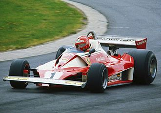
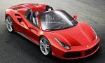
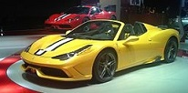
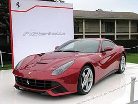

Ferrari S.p.A. is an Italian luxury sports car manufacturer based in Maranello. Founded by Enzo Ferrari in 1929, as Scuderia Ferrari, the company sponsored drivers and manufactured race cars before moving into production of street-legal vehicles in 1947. Fiat acquired 50% of Ferrari in 1969 and expanded its stake to 90% in 1988. Ferrari is the world's most powerful brand according to Brand Finance. In May 2012 the 1962 Ferrari 250 GTO became the most expensive car in history, selling in a private transaction for $38,115,000 to American communications magnate Craig McCaw. In 2014 Fiat announced its intentions to sell a portion of its share in Ferrari; as of the announcement Fiat owned 90% of Ferrari. In July 2015, it was announced that 10% of the company would be offered up for public sale in an IPO, with 80% of the company being distributed to shareholders of Fiat Chrysler Automobiles, and the remaining 10% continuing to be owned by Piero Ferrari. Throughout its history, the company has been noted for its continued participation in racing, especially in Formula One, where it is the most successful racing team, holding the most constructors championships (16) and having produced the highest number of winning drivers (15).Ferrari road cars are generally seen as a symbol of speed, luxury and wealth.
{kind=link}
- Ferrari S.p.A.
- Traded as NYSE: RACE
- Industry: Automotive
- Founded: 1947 (historical 1929)
- Founder: Enzo Ferrari
- Headquarters: Maranello, Italy
- Key people:
- Sergio Marchionne(Chairman)
- Piero Ferrari(Vice Chairman)
- Amedeo Felisa(CEO)
- Products: Sports cars
- Production output: 7,255 units (2014)
- Revenue Increase: € 2.3 billion (2013) +5% vs 2012
- Owner: Fiat Chrysler Automobiles, NV
80%
- Floated on NYSE
10%
- Number of employees: 2,695
- Parent Fiat Chrysler Automobiles, NV
History
Enzo Ferrari was not initially interested in the idea of producing road cars when he formed Scuderia Ferrari in 1929, with headquarters in Modena. Scuderia Ferrari (pronounced [skudeˈriːa]) literally means "Ferrari Stable" and is usually used to mean "Team Ferrari." Ferrari prepared and fielded Alfa Romeo racing cars for amateur drivers. In 1933 Alfa Romeo withdrew its in-house racing team and appointed Scuderia Ferrari as works team. Enzo Ferrari received latest specifications Monopostos and fielded many famous drivers such as Tazio Nuvolari and Achille Varzi. In 1938 Alfa Romeo brought its racing operation again in-house, forming Alfa Corse in Milano and hired Enzo Ferrari as manager of the new racing department. At the same time the Scuderia Ferrari was disbanded.

The first Ferrari road car was the 1947 125 S, powered by a 1.5 L V12 engine; Enzo Ferrari reluctantly built and sold his automobiles to fund Scuderia Ferrari. In 1960 the company was restructured as a public corporation under the name SEFAC S.p.A. (Società Esercizio Fabbriche Automobili e Corse). Early in 1969, Fiat took a 50% stake in Ferrari. An immediate result was an increase in available investment funds, and work started at once on a factory extension intended to transfer production from Fiat's Turin plant of the Ferrari engined Fiat Dino. New model investment further up in the Ferrari range also received a boost.
Motosport
{kind=link}
Since the company's beginnings, Ferrari has been involved in motorsport, competing in a range of categories including Formula One and sports car racing through its Scuderia Ferrari sporting division as well as supplying cars and engines to other teams and for one make race series. The 1940 AAC 815 was the first racing car to be designed by Enzo Ferrari, although it was not badged as a Ferrari model. Scuderia Ferrari has participated in several classes of motorsport, though it is currently only officially involved in Formula One. It is the only team to have competed in the Formula One World Championship continuously since its inception in 1950. José Froilán González gave the team its first F1 victory at the 1951 British Grand Prix. Alberto Ascari gave Ferrari its first Drivers Championship a year later. Ferrari is the oldest team in the championship, and the most successful: the team holds nearly every Formula One record. As of 2014, the team's records include 15 World Drivers Championship titles (1952, 1953, 1956, 1958, 1961, 1964, 1975, 1977, 1979, 2000, 2001, 2002, 2003, 2004 and 2007) 16 World Constructors Championship titles (1961, 1964, 1975, 1976, 1977, 1979, 1982, 1983, 1999, 2000, 2001, 2002, 2003, 2004, 2007 and 2008), 221 Grand Prix victories, 6736.27 points, 679 podium finishes, 207 pole positions, and 230 fastest laps in 890 Grands Prix contested. Of the 19 tracks used in 2014, 8 have lap records set by the Ferrari F2004, with a further 3 set by the Ferrari F2003-GA, Ferrari F2008 and Ferrari F10.
Current models
| 488 GTB | 488 Spider | 458 Speciale | 458 Speciale A |
|---|---|---|---|
|
|
|
|
 |  |  |  |
| California T | F12berlinetta | FF | LaFerrari |
|
|
|
|
 |  |  |  |